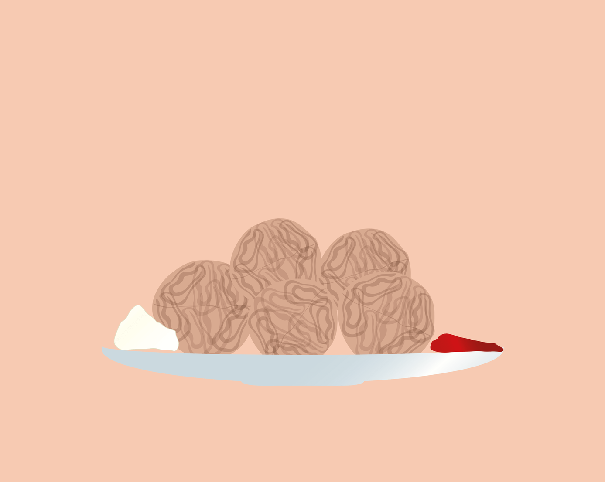

Ingredienser
5 dl mel
1/2 tsk salt
1 tsk natron
1 tsk kardemomme
3 spsk sukker
1 økologisk citron
1 dl Thise minimælk
2,5 dl Thise yogurt med æble og pære
1 dl Thise piskefløde
20 g smør
3 æg
Fremgangsmåde:
Bland alle de tørre ingredienser sammen. Kom også revet citronskal i blandingen. Del æggene op i hvide og blomme. Kom blommer i en skål med mælken, yogurten og fløden og pisk det sammen. Hæld derefter denne blanding op til de tørre ingredienser og bland det hele sammen til en dej. Pisk æggehviderne stive og vend dem forsigtigt i dejblandingen. Steg æbleskiverne i smør i en æbleskivepande. Serveres med flormelis og syltetøj.